Soluções são misturas homogênias que podem ser encontradas nos estados de agregação gasoso, liquido e sólido.
É formada por dois componentes: o soluto (em menor quantidade) e o solvente (em maior), um completamente dissolvido no outro (soluto dissolvido no solvente). Em nossos exemplos o solvente será água e o soluo será KCl, cloreto de potássio.
Para conseguirmos uma solução, precisamos saber o coeficiente de solubilidade do soluto. Coeficiente de solubilidade é a medidade de capacidade que um soluto possui de se dissolver em uma quantidade-padrão de solvente, em determinadas condições de temperatura e pressão. No nosso caso, o coeficiente de solubilidade do KCl é de 34g/100g de água, à 20°C sob 1 atm.
A concentração de uma solução é determinada pela relação entre o soluto e a solução. Porém é possivel determinar várias tipo de relações, que são dividas em físicas e químicas. A que não dependem da massa molar são chamadas de físicas e as que dependem são chamadas de química.
Ou concentração comum é definida pela quantidade de soluto que se encontra em volume-padrão de solução em g/L.
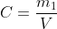Em que m1 é referente a massa do soluto e V é referente ao volume do solvente. No nosso caso, tendo 34g de KCl dissolvido em 100ml de água, a concentração seria igual a:
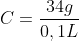 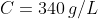A partir do coeficiente de solubilidade da solução, podemos definir a classificação da solução em relação a concentração de seu soluto em:
Teste abaixo com nosso exemplo, KCl dissolvido em água:
A densidade de uma solução será definada pela relação entre a massa e o volume dessa solução.
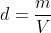, em que m refere-se a massa da solução e V refere-se ao volume da solução. Num exemplo, se a solução em questão tem 50g e 100mL, a densidade será:
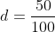 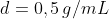O título de uma solução é definido pela relação da massa do soluto e a soma da massa do soluto com o solvente.
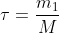Mas é normalmente expressado em porcentagem, para isso fazemos:
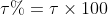Como somente substâncias possuem densidade fixa, a densidade de misturas dependerá da quantidade de cada componente, determinada pela porcentagem em titulo de massa.
Usado para exprimir a concentração de solução em que todos os componentes não são sólidos. É determinado pela razão entre o volume do soluto e o volume da solução
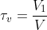, em que V1 refere-se ao volume do soluto e V refere-se ao volume da solução
E como no título em massa, pode ser definido em porcentagem com:
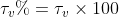Definido pela razão de uma parte do soluto em 1 000 000 de partes da solução
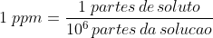É usado para determinar particulas muito escassas em uma solução
É a concentração de matéria do soluto na solução, determinada pela razão entre o mol do soluto (n1) e o volume da solução.
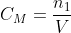Para se diluir uma solução é necessário adicionar solvente à solução.
Para se concentrar uma solução é necessário retirar solvente da solução.
Para misturas que não reage entre si, basta determinarmos a concentração de cada soluto na solução final. Portanto é necessário apenas observar se são de soluto diferente ou soluto igual.
Solutos diferentes: Devemos determinar a concentração de cada soluto na solução final, levando em conta a quantidade de cada soluto e o volume da solução final.
Solutos iguais: Determinamos a concentração do soluto na solução final, levando em conta a quantidade do soluto e o volume final da solução.
Para misturas que reagem entre si, devemos assumir o processo quimico a partir da composição da solução final. A partir da proporção estequiométrica dos componetentes, podemos calculas a concentração dos produtos na solução final.
Um outro meio de determinar a concentração de uma solução é por meio da reação de um volume conhecido desta com um volume conhecido de uma solução outra de concentração conhecida. A este processo chamamos de titulação